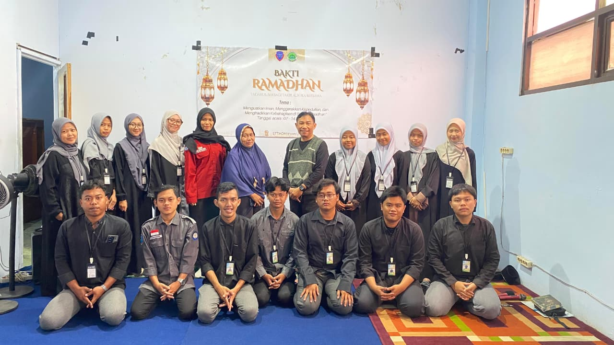
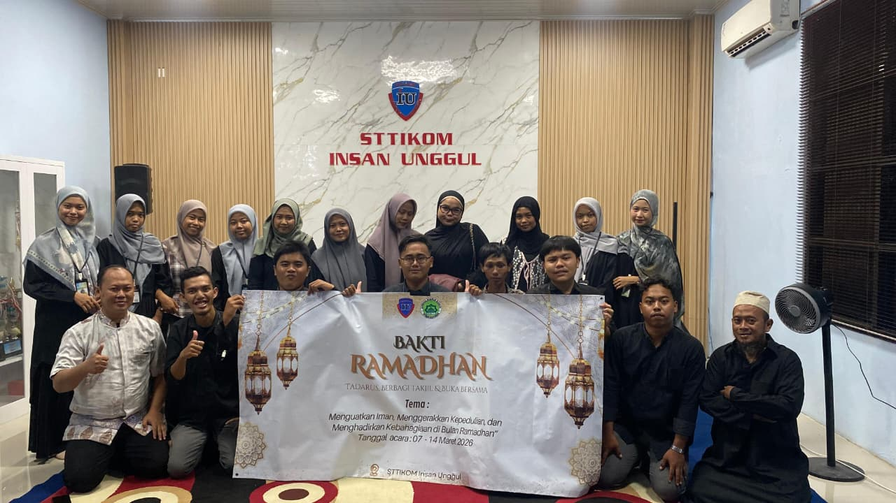

Sejarah Singkat LDK Nursyahid
Jejak langkah perjuangan dakwah di kampus dari masa ke masa.

Awal Mula Pergerakan (2010)
LDK Nursyahid lahir dari keprihatinan sekelompok kecil mahasiswa yang merindukan adanya wadah pembinaan keislaman yang terstruktur di kampus. Berawal dari lingkaran-lingkaran diskusi kecil di selasar masjid, semangat untuk membentuk sebuah organisasi dakwah yang solid mulai tumbuh.
Dengan modal semangat dan tekad yang kuat, para pendiri mulai merintis kegiatan-kegiatan sederhana seperti kajian pekanan dan buletin dakwah. Nama "Nursyahid" dipilih dengan harapan agar lembaga ini menjadi saksi cahaya (Nur) kebenaran Islam di tengah kehidupan akademik.

Masa Pertumbuhan dan Pengembangan (2015 - Sekarang)
Memasuki era baru, LDK Nursyahid mulai melebarkan sayapnya. Berbagai departemen dibentuk untuk mengelola program kerja yang lebih beragam, mulai dari kaderisasi, syiar, kemuslimahan, hingga aksi sosial. Program-program unggulan seperti mentoring, tabligh akbar, dan bakti sosial menjadi agenda rutin yang dinantikan.
Hingga hari ini, LDK Nursyahid terus berkomitmen untuk beradaptasi dengan zaman, memanfaatkan teknologi untuk syiar, dan menjalin sinergi dengan berbagai pihak. Perjuangan ini akan terus berlanjut, dari generasi ke generasi, untuk mencetak insan-insan akademis yang berkarakter Qur'ani dan bermanfaat bagi umat.